オーストリアのウイーンでノマドワーク～食を楽しむ～
カナダのトロントとウイーンの時差は6時間。この時差が、都合がよい。
トロント時間に合わせて午後3時から仕事を始めるので、それまでは観光に出歩くことができるのだ。
ホテルの最寄り駅から有名なナッシュマルクト市場までは4駅。食料調達と昼ご飯を食べるために行ってみた。
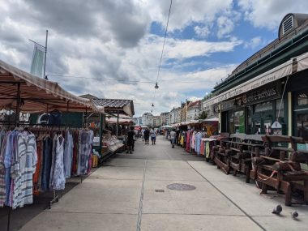
大きないちじくとグーズベリーを買った。
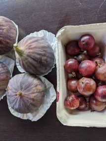
いちじくは今日食べたい旨を伝え、熟しているのを選んでもらった。４つで１０ユーロ。意外と高い。この後帰りに立ち寄ったホテルの前にある商店ではいちじくがひとつ０・９９ユーロで売られていた。市場で買ったほうがやや大きく立派な見栄えだったけれど。
グーズベリーは１．８０ユーロ。食べたことがないので買ってみたけれど、酸っぱくて生で食べるには向かないということが理解できた。半分に切って、スーパーで買ったサラダにトッピングして消費した。
ウイーンは物価が高く、旅行者にとって食費のかかる街だ。レストランで食べると高くつく。高いが、ボリュームがあって1人前が日本人にとっての2人前くらいある。夜は仕事で出かけられないので、夕ご飯は1人前をテイクアウトして2人で分け、スーパーで買ったサラダやフルーツとともに部屋で食べた。
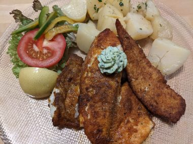
仕事前に観光にでたときの昼ご飯は時間も推してることもあり、安く、手早く済ませる。
↓通りによくあるスタンドで立ち食い。

このソーセージのおいしいこと。
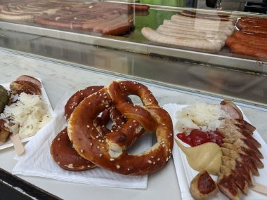
↓ドナウ川沿いに並ぶ店で売っている鶏肉のシュニッツェルのサンド。
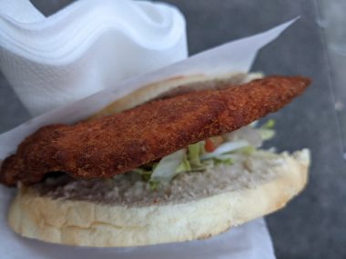
ウイーン名物といえば、チョコレートケーキのザッハトルテ。試さずにはいられない。
↓有名なのはここ、CAFE SACHER WIEN
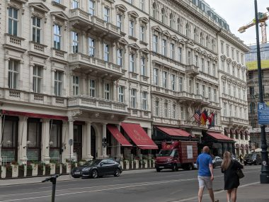
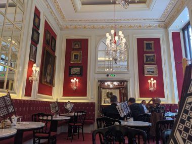
ケーキ、7.9ユーロ、ダブルエスプレッソ6.10ユーロ。見た目どおりのおいしさ。
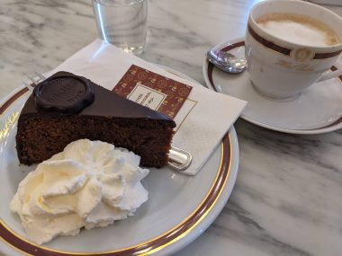
格式ある店の重厚なインテリアの中で堪能するスイーツとコーヒーも格別だけれど、テイクアウトのみのコーヒー屋さんでコーヒーをテイクアウトして屋外で歴史ある街並みを眺めながらのコーヒーもおいしい。
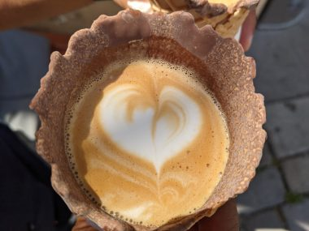
気に入って何度も通ったコーヒー屋さん、Fenster Cafe。 目立たない裏道、Griechengasseにある。
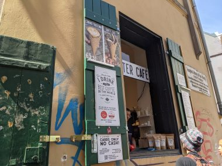
ウイーン名物のManner（マンナー）で買ったウエハースともに。
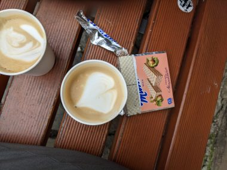